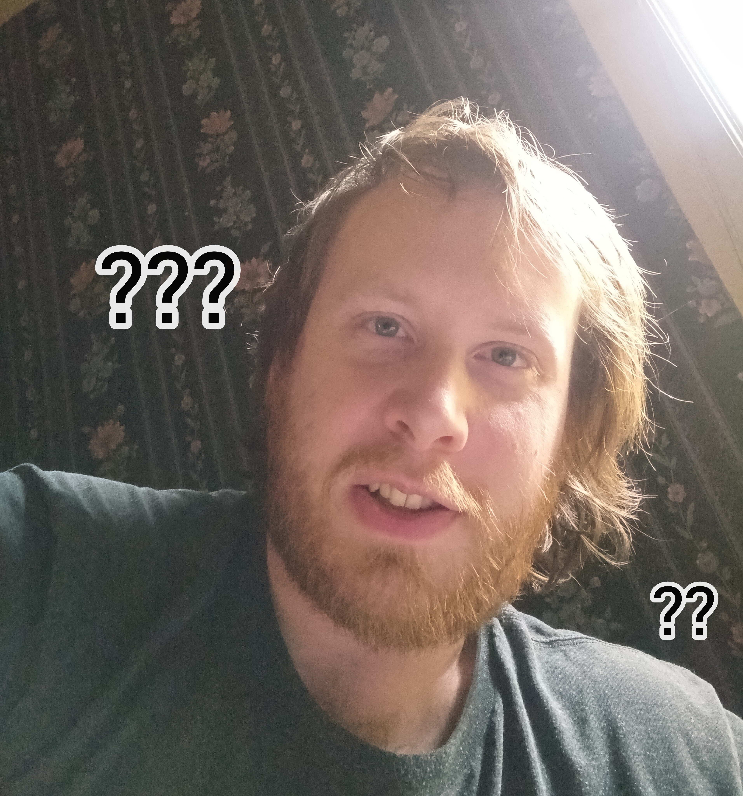

Faction Seven Entertainment
About the Developer
Faction Seven is a dream to bring creators together and build things wonderful to behold.
Contact 👉🼠faction7entertainment@gmail.com
Store 👕 f7e.printful.me
Patreon Patreon.com/FactionSevenEntertainment
The studio consists of:
Will Hooker (Raszyra)

About
I'm Will, an independent artist, writer, game designer and entrepreneur from West Coast USA. My enduring dream is to build a broad-scope entertainment media company from the ground up, focusing on creating a platform for independent creators.
Apart from games and tech I love writing, cooking, anime, philosophy, and martial arts—from Tai Chi to Krav Maga.
I chase my dreams relentlessly, even if I get distracted sometimes—and I believe in myself no matter what! I'm always on the lookout for fresh talent too; there's nothing quite like helping people learn, grow, and find their own dreams.
Will, Lv. 29 Monk
Path of the White Lotus
HP [1208/1208] MP [1118/1285]
XP: [n / Lv. x 1.2!]
Subclass: Cleric, Bard, Paladin, Assassin,
Mage, Wizard, Sorcerer, Warlock
Strength: 12 Dexterity: 14
Perception: 17(-2) Endurance: 11
Intelligence: 16 Wisdom: 15
Charisma: 14 Luck: ???
Traits:
+ Flame Resistance (cooking xp)
+ Poison Resistance (12 steps)
+ Perseverance
+ Critical Thinking
+ Adaptive
- Bleeding Heart
- Egocentric
- Stubborn
- Procrastinator
- Competitive
Feats:
+ Arcane Lore
+ Entrepreneur
- Wanted
- Dropout
Motivation: To become healthy, wealthy, and wise
Goals:
• Lose 40lbs, get acrobatic
• Create and run a successful indie media platform
• Own an ethical multimedia empire
• Turn a castle into a theme park
• Terraform Mars
🥷🼠My Facebook: Will Hooker
💻 My GitHub: Raszyra on GitHub
🮠My Itch.io: Raszyra on Itch.io
🮠My Fiverr: Will on Fiverr